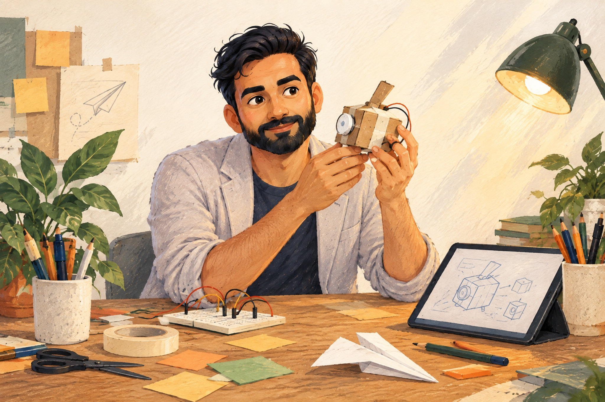

<title>Playground — Tushar Pathak Journal</title>
<link rel="preconnect" href="https://fonts.googleapis.com">
<link rel="preconnect" href="https://fonts.gstatic.com" crossorigin>
<link rel="stylesheet" href="https://fonts.googleapis.com/css2?family=Fraunces:opsz,wght,SOFT@9..144,400..700,0..100&family=Inter:wght@400;500;600&family=Caveat:wght@400;600&display=swap">
<style>
  /* ---------- tokens (single paper world; painted explicitly) ---------- */
  :root {
    --paper: #F7F1E7;
    --ivory: #FBF7EF;
    --paper-2: #EFE7D8;
    --navy: #0D1735;
    --navy-2: #2E3854;
    --ink-soft: #5A6178;
    --rust: #B64927;
    --terracotta: #92381F;
    --forest: #214F43;
    --green-2: #496D58;
    --steel: #63799E;
    --note: #EEDCA9;
    --kraft: #D7BE93;
    --line: rgba(13, 23, 53, .12);
    --shadow-paper: 0 1px 2px rgba(13,23,53,.08), 0 10px 24px -12px rgba(13,23,53,.22);
    --display: "Fraunces", "Iowan Old Style", Georgia, serif;
    --body: "Inter", system-ui, -apple-system, "Segoe UI", sans-serif;
    --hand: "Caveat", "Segoe Print", "Bradley Hand", cursive;
    --gutter: clamp(16px, 4vw, 56px);
    --max: 1360px;
  }

  * { box-sizing: border-box; }
  body {
    margin: 0;
    background: var(--paper);
    color: var(--navy);
    font-family: var(--body);
    font-size: 16px;
    line-height: 1.6;
    -webkit-font-smoothing: antialiased;
    overflow-x: hidden;
    position: relative;
  }
  /* paper grain: two faint noise layers, very low opacity */
  body::before {
    content: "";
    position: fixed; inset: 0; pointer-events: none; z-index: 0;
    background-image:
      radial-gradient(rgba(13,23,53,.035) .6px, transparent .7px),
      radial-gradient(rgba(146,56,31,.03) .5px, transparent .6px);
    background-size: 7px 7px, 11px 11px;
    background-position: 0 0, 3px 5px;
    opacity: .9;
  }
  a { color: inherit; text-decoration: none; }
  img { max-width: 100%; display: block; }
  h1, h2, h3 { margin: 0; font-family: var(--display); font-weight: 500; line-height: 1.02; letter-spacing: -.015em; text-wrap: balance; }
  p { margin: 0; }
  .hand { font-family: var(--hand); font-weight: 600; line-height: 1.15; }
  .eyebrow { font-size: 12px; font-weight: 600; letter-spacing: .14em; text-transform: uppercase; color: var(--navy-2); }
  .eyebrow .dot { color: var(--rust); margin: 0 .4em; }
  .wrap { max-width: var(--max); margin-inline: auto; padding-inline: var(--gutter); position: relative; z-index: 1; }
  :focus-visible { outline: 2px solid var(--rust); outline-offset: 3px; border-radius: 4px; }
  .sr-only { position: absolute; width: 1px; height: 1px; overflow: hidden; clip: rect(0 0 0 0); white-space: nowrap; }

  /* ---------- header ---------- */
  .header {
    position: sticky; top: env(safe-area-inset-top, 0px); z-index: 20;
    background: color-mix(in srgb, var(--paper) 86%, transparent);
    backdrop-filter: blur(10px); -webkit-backdrop-filter: blur(10px);
    border-bottom: 1px solid transparent;
  }
  .header.scrolled { border-bottom-color: var(--line); }
  .header .wrap { display: grid; grid-template-columns: auto 1fr auto; align-items: center; gap: 24px; padding-block: 14px; }
  .brand { display: flex; align-items: center; gap: 12px; }
  .brand svg { width: 40px; height: 40px; flex: none; }
  .brand .name { font-size: 13px; font-weight: 600; letter-spacing: .12em; text-transform: uppercase; line-height: 1.1; display: block; }
  .brand .sub { font-family: var(--hand); font-size: 17px; font-weight: 400; color: var(--navy-2); line-height: 1; margin-top: 2px; display: block; }
  .nav { display: flex; justify-content: center; gap: clamp(18px, 3vw, 36px); font-family: var(--display); font-size: 18px; font-weight: 500; }
  .nav a { position: relative; padding-block: 4px; }
  .nav a[aria-current="page"]::after, .nav a:hover::after {
    content: ""; position: absolute; left: -2px; right: -2px; bottom: -2px; height: 6px;
    background: url("data:image/svg+xml;utf8,<svg xmlns='http://www.w3.org/2000/svg' viewBox='0 0 60 6' preserveAspectRatio='none'><path d='M1 4 C 12 1, 22 5, 32 3 S 50 1, 59 3' fill='none' stroke='%230D1735' stroke-width='2' stroke-linecap='round'/></svg>") center/100% 100% no-repeat;
  }
  .nav a:hover::after { opacity: .45; }
  .nav a[aria-current="page"]:hover::after { opacity: 1; }
  .pill {
    display: inline-flex; align-items: center; gap: 8px; padding: 10px 20px; border-radius: 999px;
    background: var(--navy); color: var(--ivory); font-family: var(--hand); font-size: 20px; font-weight: 600; line-height: 1;
    box-shadow: 0 6px 14px -8px rgba(13,23,53,.5);
    transition: transform .18s ease;
  }
  .pill:hover { transform: translateY(-1px); }
  .menu-btn { display: none; }

  /* ---------- buttons (shared) ---------- */
  .cta-row { display: flex; flex-wrap: wrap; gap: 12px; align-items: center; }
  .btn { display: inline-flex; align-items: center; gap: 10px; padding: 12px 22px; border-radius: 999px; font-family: var(--hand); font-size: 22px; font-weight: 600; line-height: 1; transition: transform .18s ease, box-shadow .18s ease; }
  .btn-primary { background: var(--rust); color: var(--ivory); box-shadow: 0 8px 18px -10px rgba(146,56,31,.7); }
  .btn-primary:hover { transform: translateY(-1px); box-shadow: 0 12px 22px -10px rgba(146,56,31,.8); }
  .btn-secondary { background: var(--ivory); color: var(--navy); border: 1.5px solid var(--line); font-family: var(--body); font-size: 15px; font-weight: 500; }
  .btn-secondary:hover { border-color: var(--navy-2); }
  .btn-secondary svg { width: 16px; height: 16px; }

  /* ---------- torn paper transitions ---------- */
  .torn { position: relative; }
  .torn-top { display: block; width: 100%; height: 44px; margin-bottom: -1px; }
  .torn-top path { fill: var(--paper-2); }

  /* ---------- shared paper objects (from home.html) ---------- */
  .tape { position: absolute; width: 96px; height: 26px; top: -12px; left: 50%; transform: translateX(-50%) rotate(-3deg);
    background: rgba(215,190,147,.55); border: 1px solid rgba(146,56,31,.08);
    box-shadow: 0 1px 1px rgba(13,23,53,.05) inset; }
  .tape.l { left: 34px; transform: rotate(-9deg); }
  .tape.r { left: auto; right: 24px; transform: rotate(7deg); }
  .sketch { border: 1.5px solid rgba(13,23,53,.25); border-radius: 6px; padding: 14px; margin-top: 4px; display: grid; gap: 10px; background: repeating-linear-gradient(0deg, transparent 0 27px, rgba(99,121,158,.16) 27px 28px); }
  .sketch .row { display: flex; flex-wrap: wrap; align-items: center; gap: 10px; }
  .sketch .box { border: 1.5px solid var(--navy-2); border-radius: 3px; padding: 4px 10px; font-family: var(--hand); font-size: 17px; background: var(--ivory); transform: rotate(-.4deg); }
  .sketch .box.acc { border-color: var(--rust); color: var(--rust); }
  .sketch .box.grn { border-color: var(--forest); color: var(--forest); }
  .sketch .arr { font-family: var(--hand); font-size: 20px; color: var(--ink-soft); }
  .sketch .arr.in { margin-left: 24px; }
  .sticky {
    position: absolute; padding: 14px 16px; width: 168px; background: var(--note); color: var(--navy);
    font-family: var(--hand); font-size: 19px; line-height: 1.2; box-shadow: 0 8px 14px -8px rgba(13,23,53,.35); transform: rotate(4deg);
  }
  .sticky.bl { left: -28px; bottom: -22px; transform: rotate(-5deg); width: 156px; }
  .sticky.tr { right: -22px; top: 18px; background: var(--kraft); }
  .notebook { position: relative; background: var(--ivory); border-radius: 3px 10px 10px 3px; box-shadow: var(--shadow-paper); padding: 30px 30px 26px 54px;
    background-image: repeating-linear-gradient(0deg, transparent 0 31px, rgba(99,121,158,.18) 31px 32px); transform: rotate(.5deg); }
  .notebook::before { content: ""; position: absolute; left: 36px; top: 0; bottom: 0; width: 1.5px; background: rgba(182,73,39,.45); }
  .notebook .holes { position: absolute; left: 12px; top: 22px; bottom: 22px; display: flex; flex-direction: column; justify-content: space-between; }
  .notebook .holes i { width: 11px; height: 11px; border-radius: 50%; background: var(--paper-2); box-shadow: inset 0 1px 2px rgba(13,23,53,.25); }
  .notebook .prompt { font-family: var(--hand); font-size: 22px; color: var(--navy-2); }
  .postcard { position: relative; background: var(--ivory); padding: 22px 24px 24px; box-shadow: var(--shadow-paper); transform: rotate(1.5deg); border-radius: 3px; display: grid; gap: 12px; }
  .postcard .stamp { position: absolute; top: 14px; right: 14px; width: 54px; height: 64px; border: 2px dashed var(--kraft); display: grid; place-items: center; font-family: var(--hand); font-size: 16px; color: var(--green-2); transform: rotate(6deg); background: var(--paper-2); }
  .postcard .row { display: grid; grid-template-columns: 82px 1fr; gap: 12px; align-items: baseline; font-size: 15px; }
  .postcard .row span { font-family: var(--hand); font-size: 19px; color: var(--ink-soft); }
  .postcard .row a { color: var(--navy); border-bottom: 1px solid var(--line); word-break: break-all; }
  .postcard .row a:hover { color: var(--rust); border-color: var(--rust); }
  .footer .wrap { border-top: 1px solid var(--line); padding-block: 22px 36px; display: flex; flex-wrap: wrap; gap: 10px 24px; justify-content: space-between; font-size: 13px; color: var(--ink-soft); }
  .footer .hand { font-size: 18px; color: var(--navy-2); font-weight: 400; }

  /* ================= PAGE: PLAYGROUND ================= */

  /* ---------- opener: h1 + wide masked scene bleed ---------- */
  .opener { position: relative; z-index: 1; }
  .opener .wrap { padding-block: clamp(28px, 4vw, 56px) 0; display: grid; grid-template-columns: minmax(0, 1fr) auto; gap: 24px 40px; align-items: end; }
  .opener h1 { font-size: clamp(42px, 5.2vw, 76px); font-variation-settings: "opsz" 144, "SOFT" 30; max-width: 12ch; margin-top: 18px; }
  .opener h1 .ul { position: relative; white-space: nowrap; }
  .opener h1 .ul svg { position: absolute; left: -2%; right: -2%; bottom: -.12em; width: 104%; height: .32em; overflow: visible; }
  .opener h1 .ul path { stroke: var(--rust); stroke-width: 5; fill: none; stroke-linecap: round; stroke-dasharray: 400; stroke-dashoffset: 400; animation: draw 1.1s .5s ease-out forwards; }
  @keyframes draw { to { stroke-dashoffset: 0; } }
  .opener .aside { font-family: var(--hand); font-size: clamp(22px, 2vw, 26px); font-weight: 400; color: var(--navy-2); max-width: 22ch; transform: rotate(-1.5deg); padding-bottom: 10px; }
  .opener .aside svg { display: block; width: 110px; height: 34px; margin-top: 2px; }
  .opener .aside path { stroke: var(--navy-2); stroke-width: 1.6; fill: none; stroke-dasharray: 5 6; stroke-linecap: round; }
  .opener .aside .head { stroke-dasharray: none; }

  .bench-scene { position: relative; margin-top: clamp(20px, 3vw, 40px); }
  .bench-scene .frame { position: relative; width: min(100%, 1600px); margin-inline: auto; height: clamp(300px, 40vw, 580px); }
  .bench-scene img {
    width: 100%; height: 100%; object-fit: cover; object-position: 50% 38%;
    -webkit-mask-image: linear-gradient(90deg, transparent 0, #000 9%, #000 91%, transparent 100%), linear-gradient(180deg, transparent 0, #000 7%, #000 84%, transparent 100%);
    -webkit-mask-composite: source-in; mask-composite: intersect;
    mask-image: linear-gradient(90deg, transparent 0, #000 9%, #000 91%, transparent 100%), linear-gradient(180deg, transparent 0, #000 7%, #000 84%, transparent 100%);
  }
  .bench-scene .caption { position: absolute; right: clamp(16px, 6vw, 120px); bottom: 62px; z-index: 3; font-family: var(--hand); font-size: 20px; color: var(--navy-2); font-weight: 400; line-height: 1;
    background: var(--ivory); padding: 8px 14px 9px; border-radius: 2px; box-shadow: var(--shadow-paper); transform: rotate(-1.5deg); }

  /* ---------- the bench: pinned experiments ---------- */
  .bench { background: var(--paper-2); position: relative; z-index: 2; margin-top: -44px; }
  .bench .torn-top path { fill: var(--paper-2); }
  .bench .wrap { padding-block: 24px clamp(72px, 8vw, 120px); }
  .bench-head { display: flex; flex-wrap: wrap; gap: 8px 24px; align-items: baseline; justify-content: space-between; margin-bottom: clamp(28px, 4vw, 48px); }
  .bench-head .hand { font-size: 20px; font-weight: 400; color: var(--ink-soft); }

  .board {
    display: grid; grid-template-columns: repeat(12, minmax(0, 1fr)); grid-auto-rows: auto;
    gap: clamp(20px, 2.6vw, 36px) clamp(16px, 2vw, 28px); align-items: start;
  }
  .board > * { min-width: 0; }
  .sheet   { grid-column: 1 / 5;  grid-row: 1 / 3; }
  .ex-1    { grid-column: 5 / 10; grid-row: 1; }
  .ex-2    { grid-column: 10 / 13; grid-row: 1; margin-top: 26px; }
  .ex-3    { grid-column: 5 / 9;  grid-row: 2; margin-top: 8px; }
  .ex-4    { grid-column: 9 / 13; grid-row: 2; margin-top: 30px; }

  /* the notebook sheet */
  .sheet { transform: rotate(-1deg); padding-top: 26px; padding-bottom: 28px; }
  .sheet h2 { font-family: var(--hand); font-weight: 600; font-size: clamp(30px, 2.6vw, 36px); line-height: 1.1; color: var(--navy); letter-spacing: 0; }
  .sheet p { font-family: var(--hand); font-weight: 400; font-size: 22px; line-height: 32px; color: var(--navy-2); margin-top: 16px; }
  .sheet .list { margin: 18px 0 0; padding: 0; list-style: none; font-family: var(--hand); font-size: 21px; line-height: 32px; color: var(--navy-2); }
  .sheet .list li::before { content: "— "; color: var(--rust); }
  .sheet .arrow { display: block; width: 120px; height: 46px; margin: 10px 0 0 auto; }
  .sheet .arrow path { stroke: var(--navy-2); stroke-width: 1.6; fill: none; stroke-dasharray: 5 6; stroke-linecap: round; }
  .sheet .arrow .head { stroke-dasharray: none; }

  /* experiment paper objects */
  .ex { position: relative; background: var(--ivory); border-radius: 3px; box-shadow: var(--shadow-paper); padding: 26px 26px 22px; display: grid; gap: 10px; align-content: start; transition: transform .25s ease, box-shadow .25s ease; }
  .ex:hover { box-shadow: 0 2px 3px rgba(13,23,53,.08), 0 22px 40px -18px rgba(13,23,53,.35); }
  .ex .num { font-family: var(--hand); font-size: 18px; color: var(--ink-soft); font-weight: 400; }
  .ex h3 { font-size: clamp(26px, 2.4vw, 34px); font-variation-settings: "opsz" 96, "SOFT" 20; }
  .ex .tag { font-size: 15px; line-height: 1.55; color: var(--navy-2); }
  .ex .live { justify-self: start; max-width: 100%; font-size: 14px; font-weight: 500; color: var(--navy); text-decoration: underline; text-decoration-color: var(--rust); text-decoration-thickness: 1.5px; text-underline-offset: 4px; overflow-wrap: anywhere; display: inline-flex; gap: 6px; align-items: baseline; margin-top: 4px; }
  .ex .live:hover { color: var(--rust); }
  .ex .live svg { width: 11px; height: 11px; flex: none; }
  .ex .tone { display: flex; align-items: center; gap: 8px; font-family: var(--hand); font-size: 18px; font-weight: 400; color: var(--ink-soft); margin-top: 2px; }
  .ex .daub { width: 22px; height: 16px; border-radius: 60% 40% 55% 45% / 55% 60% 40% 45%; transform: rotate(-8deg); box-shadow: inset 0 0 0 1px rgba(13,23,53,.08); }
  .daub.butter { background: #FFE389; }
  .daub.peach  { background: #FFD2B2; }
  .daub.blush  { background: #FFB4C6; }
  .daub.mint   { background: #A5EBD2; }

  /* 01 — large lined index card */
  .ex-1 { transform: rotate(.6deg); padding: 30px 32px 26px;
    background-image: linear-gradient(0deg, transparent 0 calc(100% - 1px), transparent), repeating-linear-gradient(0deg, transparent 0 27px, rgba(99,121,158,.16) 27px 28px);
    background-position: 0 58px; }
  .ex-1::before { content: ""; position: absolute; left: 0; right: 0; top: 52px; height: 1.5px; background: rgba(182,73,39,.4); }
  .ex-1 h3 { font-size: clamp(32px, 3vw, 42px); }
  .ex-1:hover { transform: translateY(-3px) rotate(.6deg); }

  /* 02 — small kraft label, taped at the top */
  .ex-2 { transform: rotate(-2.2deg); background: var(--kraft); padding: 24px 20px 20px; gap: 8px; }
  .ex-2 h3 { font-size: 26px; }
  .ex-2 .tag { font-size: 14px; }
  .ex-2 .tone, .ex-2 .num { color: var(--terracotta); }
  .ex-2:hover { transform: translateY(-3px) rotate(-2.2deg); }

  /* 03 — pinned card */
  .ex-3 { transform: rotate(-.9deg); }
  .ex-3:hover { transform: translateY(-3px) rotate(-.9deg); }
  .pin { position: absolute; top: -9px; left: 50%; width: 16px; height: 16px; border-radius: 50%; transform: translateX(-50%);
    background: radial-gradient(circle at 35% 35%, rgba(255,255,255,.3) 0, transparent 40%), var(--rust); box-shadow: 0 2px 3px rgba(13,23,53,.35); }
  .pin.forest { background: radial-gradient(circle at 35% 35%, rgba(255,255,255,.3) 0, transparent 40%), var(--forest); }

  /* 04 — wide, taped at both corners */
  .ex-4 { transform: rotate(1.1deg); padding: 28px 28px 24px; }
  .ex-4:hover { transform: translateY(-3px) rotate(1.1deg); }
  .ex-4 .tape.l { top: -12px; left: 18px; }
  .ex-4 .tape.r { top: -10px; right: 18px; }
  .ex-4 .tape.c { display: none; }

  /* a couple of tools on the bench (decorative, kept sparse) */
  .board .tools { grid-column: 1 / 5; grid-row: 3; justify-self: end; margin-top: -6px; width: min(100%, 220px); }
  .board .tools svg { width: 100%; height: auto; display: block; }
  .board .tools path, .board .tools circle { stroke: var(--navy-2); stroke-width: 1.5; fill: none; stroke-linecap: round; opacity: .55; }

  /* ---------- quiet close ---------- */
  .close { background: var(--paper); position: relative; z-index: 1; }
  .close .torn-top path { fill: var(--paper); }
  .close .wrap { padding-block: clamp(48px, 6vw, 80px) 56px; display: grid; grid-template-columns: minmax(0, 1.2fr) minmax(0, 1fr); gap: 32px; align-items: center; }
  .close h2 { font-size: clamp(34px, 4vw, 54px); font-variation-settings: "opsz" 120, "SOFT" 30; }
  .close .hand-line { font-size: clamp(24px, 2.4vw, 30px); color: var(--rust); margin-top: 12px; transform: rotate(-1.2deg); display: inline-block; }
  .close .cta-row { margin-top: 24px; }
  .close .note { justify-self: end; max-width: 300px; }
  .close .note .sticky { position: static; width: 100%; transform: rotate(3deg); font-size: 20px; font-weight: 400; padding: 18px 20px; }

  /* ---------- responsive ---------- */
  @media (max-width: 1024px) {
    .board { grid-template-columns: repeat(6, minmax(0, 1fr)); }
    .sheet { grid-column: 1 / 7; grid-row: 1; }
    .ex-1  { grid-column: 1 / 5; grid-row: 2; }
    .ex-2  { grid-column: 5 / 7; grid-row: 2; margin-top: 30px; }
    .ex-3  { grid-column: 1 / 4; grid-row: 3; margin-top: 0; }
    .ex-4  { grid-column: 4 / 7; grid-row: 3; margin-top: 22px; }
    .board .tools { display: none; }
  }
  @media (max-width: 900px) {
    .nav { display: none; }
    .nav.open { display: flex; position: absolute; left: 0; right: 0; top: 100%; flex-direction: column; align-items: flex-start; gap: 6px; padding: 12px var(--gutter) 18px; background: var(--paper); border-bottom: 1px solid var(--line); box-shadow: 0 16px 28px -20px rgba(13,23,53,.35); }
    .menu-btn { display: inline-grid; place-items: center; width: 42px; height: 42px; border: 1.5px solid var(--line); border-radius: 999px; background: var(--ivory); justify-self: end; cursor: pointer; }
    .header .pill { display: none; }
    .opener .wrap { grid-template-columns: 1fr; }
    .opener .aside { padding-bottom: 0; }
    .close .wrap { grid-template-columns: 1fr; }
    .close .note { justify-self: start; }
  }
  @media (max-width: 640px) {
    .board { grid-template-columns: 1fr; gap: 30px; }
    .sheet, .ex-1, .ex-2, .ex-3, .ex-4 { grid-column: 1; grid-row: auto; margin-top: 0; }
    .sheet { transform: rotate(-.6deg); }
    .ex-1 { transform: rotate(.4deg); padding: 26px 22px 22px; }
    .ex-2 { transform: rotate(-1.2deg); }
    .ex-3 { transform: rotate(-.5deg); }
    .ex-4 { transform: rotate(.6deg); padding: 26px 22px 22px; }
    .ex-4 .tape.l, .ex-4 .tape.r { display: none; }
    .ex-4 .tape.c { display: block; }
    .bench-scene .frame { height: clamp(240px, 62vw, 380px); }
    .bench-scene .caption { right: 16px; bottom: 54px; font-size: 18px; }
    .notebook { padding-left: 46px; }
    .sheet { padding-bottom: 16px; }
  }

  @media (prefers-reduced-motion: reduce) {
    .opener h1 .ul path { animation: none; stroke-dashoffset: 0; }
    .ex, .btn, .pill { transition: none; }
  }
</style>

<header class="header" id="header">
  <div class="wrap">
    <a class="brand" href="home.html" aria-label="Tushar Pathak — home">
      <svg viewBox="0 0 40 40" aria-hidden="true">
        <path d="M6 9 C 14 7, 22 8, 30 7" stroke="#0D1735" stroke-width="2.4" fill="none" stroke-linecap="round"/>
        <path d="M17 8 C 15 16, 13 24, 12 33" stroke="#0D1735" stroke-width="2.4" fill="none" stroke-linecap="round"/>
        <path d="M23 12 C 24 20, 22 27, 21 33" stroke="#0D1735" stroke-width="2.2" fill="none" stroke-linecap="round"/>
        <path d="M23 12 C 30 10, 35 13, 34 18 C 33 23, 27 24, 22 22" stroke="#0D1735" stroke-width="2.2" fill="none" stroke-linecap="round"/>
      </svg>
      <span>
        <span class="name">Tushar Pathak</span>
        <span class="sub">Build · Learn · Solve · Grow</span>
      </span>
    </a>
    <nav class="nav" id="nav" aria-label="Primary">
      <a href="home.html">Home</a>
      <a href="work.html">Work</a>
      <a href="thinking.html">Thinking</a>
      <a href="about.html">About</a>
      <a href="playground.html" aria-current="page">Playground</a>
    </nav>
    <a class="pill" href="contact.html">Let’s connect <span aria-hidden="true">→</span></a>
    <button class="menu-btn" type="button" aria-label="Open menu" aria-expanded="false" aria-controls="nav" id="menu-btn">
      <svg width="18" height="14" viewBox="0 0 18 14" aria-hidden="true"><path d="M1 2 C 6 1, 12 3, 17 2 M1 7 C 6 6, 12 8, 17 7 M1 12 C 6 11, 12 13, 17 12" stroke="#0D1735" stroke-width="1.8" fill="none" stroke-linecap="round"/></svg>
    </button>
  </div>
</header>

<main>
  <!-- ================= OPENER ================= -->
  <section class="opener" aria-labelledby="pg-h">
    <div class="wrap">
      <div>
        <p class="eyebrow">Playground<span class="dot">·</span>Four live experiments</p>
        <h1 id="pg-h">Small experiments. <span class="ul">Big questions.<svg viewBox="0 0 400 24" preserveAspectRatio="none" aria-hidden="true"><path d="M4 14 C 80 4, 160 20, 240 10 S 360 6, 396 14"/></svg></span></h1>
      </div>
      <p class="aside">each one links straight to the live build — go poke at it
        <svg viewBox="0 0 110 34" aria-hidden="true"><path d="M6 6 C 30 4, 60 26, 100 24"/><path class="head" d="M90 18 L 100 24 L 90 30"/></svg>
      </p>
    </div>
    <div class="bench-scene">
      <div class="frame">
        
      </div>
      <p class="caption">the bench, most evenings</p>
    </div>
  </section>

  <!-- ================= THE BENCH ================= -->
  <section class="bench torn" id="experiments" aria-labelledby="bench-h">
    <svg class="torn-top" viewBox="0 0 1440 44" preserveAspectRatio="none" aria-hidden="true">
      <path d="M0 26 L 60 22 L 110 30 L 170 18 L 230 27 L 300 15 L 350 24 L 420 12 L 480 22 L 530 16 L 600 28 L 660 20 L 720 30 L 790 17 L 850 25 L 910 13 L 980 24 L 1040 18 L 1100 29 L 1160 15 L 1230 23 L 1290 12 L 1350 24 L 1400 19 L 1440 26 L 1440 44 L 0 44 Z"/>
    </svg>
    <div class="wrap">
      <div class="bench-head">
        <h2 id="bench-h" class="eyebrow">Experiments</h2>
        <p class="hand">no status badges here — they’re all just live</p>
      </div>

      <div class="board">
        <!-- notebook sheet -->
        <aside class="notebook sheet" aria-label="A note about these experiments">
          <span class="holes" aria-hidden="true"><i></i><i></i><i></i><i></i><i></i><i></i></span>
          <h2>small things I built to learn something</h2>
          <p>None of these were meant to be products. Each one was an excuse to try a tool, a format or an idea I didn’t understand yet — and to ship it anyway.</p>
          <ul class="list">
            <li>a record I wanted to keep</li>
            <li>a question I couldn’t answer</li>
            <li>a phone I wanted to turn into something else</li>
            <li>a portfolio with no build step</li>
          </ul>
          <svg class="arrow" viewBox="0 0 120 46" aria-hidden="true"><path d="M6 8 C 40 2, 80 30, 112 36"/><path class="head" d="M104 28 L 112 36 L 102 40"/></svg>
        </aside>

        <!-- 01 Pratyasa — lined index card -->
        <article class="ex ex-1">
          <span class="tape l" aria-hidden="true"></span>
          <span class="num">01</span>
          <h3>Pratyasa</h3>
          <p class="tag">A static record of granted patent IN 429867 — a point-of-care sepsis-biomarker biosensor — with certificate, paper and footage.</p>
          <a class="live" href="https://pratyasa.vercel.app" target="_blank" rel="noopener">https://pratyasa.vercel.app<svg viewBox="0 0 12 12" aria-hidden="true"><path d="M3 9 L 9 3 M4 3 L 9 3 L 9 8" stroke="currentColor" stroke-width="1.5" fill="none" stroke-linecap="round" stroke-linejoin="round"/></svg><span class="sr-only">(opens in new tab)</span></a>
          <p class="tone"><span class="daub butter" aria-hidden="true"></span>tone: butter — warm, like the certificate paper</p>
        </article>

        <!-- 02 Tegaki — small kraft label -->
        <article class="ex ex-2">
          <span class="tape" aria-hidden="true"></span>
          <span class="num">02</span>
          <h3>Tegaki</h3>
          <p class="tag">What your handwriting suggests about you — read and written by hand.</p>
          <a class="live" href="https://tegaki-one.vercel.app" target="_blank" rel="noopener">https://tegaki-one.vercel.app<svg viewBox="0 0 12 12" aria-hidden="true"><path d="M3 9 L 9 3 M4 3 L 9 3 L 9 8" stroke="currentColor" stroke-width="1.5" fill="none" stroke-linecap="round" stroke-linejoin="round"/></svg><span class="sr-only">(opens in new tab)</span></a>
          <p class="tone"><span class="daub peach" aria-hidden="true"></span>tone: peach — soft, handwritten</p>
        </article>

        <!-- 03 Dino Arcade — pinned card -->
        <article class="ex ex-3">
          <span class="pin forest" aria-hidden="true"></span>
          <span class="num">03</span>
          <h3>Dino Arcade</h3>
          <p class="tag">A mobile PWA that turns your phone into an arcade cabinet — strictly BYO-ROM, no game data ships or uploads.</p>
          <a class="live" href="https://007u5h4r.github.io/dino-arcade-pwa/" target="_blank" rel="noopener">https://007u5h4r.github.io/<wbr>dino-arcade-pwa/<svg viewBox="0 0 12 12" aria-hidden="true"><path d="M3 9 L 9 3 M4 3 L 9 3 L 9 8" stroke="currentColor" stroke-width="1.5" fill="none" stroke-linecap="round" stroke-linejoin="round"/></svg><span class="sr-only">(opens in new tab)</span></a>
          <p class="tone"><span class="daub blush" aria-hidden="true"></span>tone: blush — the arcade-cabinet pink</p>
        </article>

        <!-- 04 Cinematic Portfolio — wide, taped corners -->
        <article class="ex ex-4">
          <span class="tape l" aria-hidden="true"></span>
          <span class="tape r" aria-hidden="true"></span>
          <span class="tape c" aria-hidden="true"></span>
          <span class="num">04</span>
          <h3>Cinematic Portfolio</h3>
          <p class="tag">A scroll-driven film portfolio — AI-generated footage of me as the backdrop, Apple-product-page style, no build step.</p>
          <a class="live" href="https://tushar-pathak.vercel.app/" target="_blank" rel="noopener">https://tushar-pathak.vercel.app/<svg viewBox="0 0 12 12" aria-hidden="true"><path d="M3 9 L 9 3 M4 3 L 9 3 L 9 8" stroke="currentColor" stroke-width="1.5" fill="none" stroke-linecap="round" stroke-linejoin="round"/></svg><span class="sr-only">(opens in new tab)</span></a>
          <p class="tone"><span class="daub mint" aria-hidden="true"></span>tone: mint — the previous portfolio, still up</p>
        </article>

        <!-- a pencil and a roll of tape, sketched -->
        <div class="tools" aria-hidden="true">
          <svg viewBox="0 0 220 70">
            <path d="M12 52 L 150 14 L 162 22 L 24 60 Z"/>
            <path d="M150 14 L 158 8 L 168 18 L 162 22"/>
            <path d="M12 52 L 6 62 L 24 60"/>
            <path d="M40 48 L 146 19"/>
            <circle cx="192" cy="42" r="18"/>
            <circle cx="192" cy="42" r="8"/>
            <path d="M206 30 C 214 36, 216 48, 210 56"/>
          </svg>
        </div>
      </div>
    </div>
  </section>

  <!-- ================= QUIET CLOSE ================= -->
  <section class="close torn" id="next" aria-labelledby="close-h">
    <svg class="torn-top" viewBox="0 0 1440 44" preserveAspectRatio="none" aria-hidden="true">
      <path d="M0 18 L 60 28 L 130 14 L 190 26 L 260 16 L 330 28 L 400 12 L 460 24 L 530 18 L 600 30 L 670 14 L 740 24 L 800 16 L 870 28 L 940 18 L 1010 26 L 1080 12 L 1150 24 L 1220 16 L 1290 28 L 1360 14 L 1440 22 L 1440 44 L 0 44 Z"/>
    </svg>
    <div class="wrap">
      <div>
        <p class="eyebrow">Bigger problems</p>
        <h2 id="close-h">The experiments are small on purpose. The work isn’t.</h2>
        <p class="hand hand-line">Same curiosity. Bigger problems.</p>
        <div class="cta-row">
          <a class="btn btn-primary" href="work.html">See the work <span aria-hidden="true">→</span></a>
          <a class="btn btn-secondary" href="contact.html">Say hello</a>
        </div>
      </div>
      <div class="note">
        <p class="sticky">if one of these breaks, tell me — that’s half the point of putting them up</p>
      </div>
    </div>
  </section>
</main>

<footer class="band" aria-labelledby="band-h">
<style>
  .band { position: relative; z-index: 1; margin-top: clamp(48px, 6vw, 88px); color: var(--ivory); }
  .band .band-torn { display: block; width: 100%; height: 46px; margin-bottom: -1px; }
  .band .band-torn path { fill: var(--terracotta); }
  .band .band-body { background: var(--terracotta);
    background-image: repeating-linear-gradient(-45deg, rgba(251,247,239,.055) 0 1.5px, transparent 1.5px 13px); }
  .band .wrap { padding-block: clamp(36px, 5vw, 64px) 0; }
  .band .eyebrow { color: rgba(251,247,239,.7); }
  .band h2 { font-size: clamp(40px, 5vw, 72px); font-variation-settings: "opsz" 144, "SOFT" 30; margin-top: 12px; color: var(--ivory); max-width: 28ch; }
  .band h2 em { font-style: italic; color: var(--note); font-variation-settings: "opsz" 144, "SOFT" 60; }
  .band h2 .dim { color: rgba(13,23,53,.78); }
  .band .hire { margin-top: 18px; font-size: 18px; color: rgba(251,247,239,.85); max-width: 46ch; }
  .band .row { display: flex; flex-wrap: wrap; justify-content: space-between; align-items: end; gap: 28px 40px; margin-top: clamp(28px, 4vw, 48px); }
  .band .label { display: block; font-size: 13px; color: rgba(251,247,239,.65); margin-bottom: 6px; }
  .band .email { font-size: clamp(18px, 2vw, 22px); color: var(--ivory); border-bottom: 1.5px solid rgba(251,247,239,.35); padding-bottom: 2px; word-break: break-all; }
  .band .email:hover { border-color: var(--note); }
  .band .social { display: flex; gap: 14px; }
  .band .social a { width: 56px; height: 56px; border-radius: 50%; background: var(--ivory); color: var(--terracotta); display: grid; place-items: center; transition: transform .18s ease; }
  .band .social a:hover { transform: translateY(-2px); }
  .band .social svg { width: 22px; height: 22px; fill: currentColor; }
  .band .social .in { font-family: var(--body); font-weight: 700; font-size: 19px; letter-spacing: -.03em; }
  .band .bar { display: flex; flex-wrap: wrap; justify-content: space-between; gap: 8px 24px; margin-top: clamp(32px, 4vw, 48px); padding-block: 18px 30px; border-top: 1px solid rgba(251,247,239,.28); font-size: 12px; letter-spacing: .08em; color: rgba(251,247,239,.78); }
  .band .bar .hand { font-size: 17px; letter-spacing: 0; font-weight: 400; color: var(--note); }
  @media (prefers-reduced-motion: reduce) { .band .social a { transition: none; } }
</style>
  <svg class="band-torn" viewBox="0 0 1440 46" preserveAspectRatio="none" aria-hidden="true">
    <path d="M0 30 L 24 18 L 48 32 L 70 14 L 96 28 L 120 22 L 140 34 L 168 12 L 192 26 L 214 20 L 240 30 L 262 16 L 288 28 L 312 24 L 336 34 L 358 14 L 384 26 L 408 20 L 430 32 L 456 16 L 480 28 L 504 22 L 528 34 L 552 18 L 576 26 L 600 12 L 624 30 L 648 22 L 672 32 L 696 16 L 720 28 L 744 20 L 768 34 L 792 14 L 816 26 L 840 22 L 864 32 L 888 18 L 912 28 L 936 12 L 960 30 L 984 22 L 1008 34 L 1032 16 L 1056 26 L 1080 20 L 1104 32 L 1128 14 L 1152 28 L 1176 22 L 1200 34 L 1224 18 L 1248 26 L 1272 12 L 1296 30 L 1320 20 L 1344 32 L 1368 16 L 1392 28 L 1416 22 L 1440 30 L 1440 46 L 0 46 Z"/>
  </svg>
  <div class="band-body">
    <div class="wrap">
      <p class="eyebrow">Let’s connect</p>
      <h2 id="band-h">Let’s <em>build</em><br><span class="dim">something people can use.</span></h2>
      <p class="hire">Hiring for PM, AI PM or AI-builder roles? Say hi.</p>
      <div class="row">
        <div><span class="label">Email</span><a class="email" href="contact.html">Tushar_Pathak@outlook.com</a></div>
        <div><span class="label">Social</span>
          <div class="social">
            <a href="https://www.linkedin.com/in/pathaktushar" aria-label="LinkedIn"><span class="in" aria-hidden="true">in</span></a>
            <a href="https://github.com/007U5H4R" aria-label="GitHub"><svg viewBox="0 0 16 16" aria-hidden="true"><path d="M8 0C3.58 0 0 3.58 0 8c0 3.54 2.29 6.53 5.47 7.59.4.07.55-.17.55-.38 0-.19-.01-.82-.01-1.49-2.01.37-2.53-.49-2.69-.94-.09-.23-.48-.94-.82-1.13-.28-.15-.68-.52-.01-.53.63-.01 1.08.58 1.23.82.72 1.21 1.87.87 2.33.66.07-.52.28-.87.51-1.07-1.78-.2-3.64-.89-3.64-3.95 0-.87.31-1.59.82-2.15-.08-.2-.36-1.02.08-2.12 0 0 .67-.21 2.2.82.64-.18 1.32-.27 2-.27.68 0 1.36.09 2 .27 1.53-1.04 2.2-.82 2.2-.82.44 1.1.16 1.92.08 2.12.51.56.82 1.27.82 2.15 0 3.07-1.87 3.75-3.65 3.95.29.25.54.73.54 1.48 0 1.07-.01 1.93-.01 2.2 0 .21.15.46.55.38A8.01 8.01 0 0 0 16 8c0-4.42-3.58-8-8-8z"/></svg></a>
            <a href="contact.html#resume" aria-label="Resume — updating" title="Sanitised resume coming — email me for a copy"><svg viewBox="0 0 24 24" aria-hidden="true"><path d="M6 2h8l6 6v14H6V2zm7 1.5V9h5.5L13 3.5zM8 12h8v1.6H8V12zm0 3.4h8V17H8v-1.6zm0 3.4h5.5v1.6H8v-1.6z"/></svg></a>
          </div>
        </div>
      </div>
      <div class="bar">
        <span>© 2026 Tushar Pathak. Built with curiosity, chai &amp; Claude Code.</span>
        <span class="hand">Observing what others overlook.</span>
        <span>Bengaluru, India</span>
      </div>
    </div>
  </div>
</footer>

<script>
  (function () {
    var header = document.getElementById('header');
    function onScroll() { header.classList.toggle('scrolled', window.scrollY > 8); }
    window.addEventListener('scroll', onScroll, { passive: true }); onScroll();

    var nav = document.getElementById('nav'), menuBtn = document.getElementById('menu-btn');
    menuBtn.addEventListener('click', function () {
      var open = nav.classList.toggle('open');
      menuBtn.setAttribute('aria-expanded', open ? 'true' : 'false');
    });
    nav.addEventListener('click', function (e) { if (e.target.tagName === 'A') { nav.classList.remove('open'); menuBtn.setAttribute('aria-expanded', 'false'); } });
  })();
</script>
